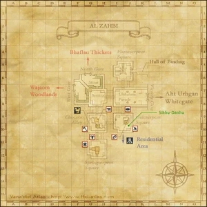
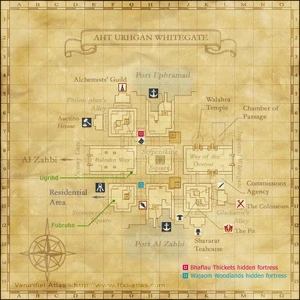

Level 75 reference · Zenith rules




The Empire of Aht Urhgan dominates the Aradjiah Continent, a landmass found east of Mindartia. This massive nation lies between the Gugru Blue and the countries of the Far East, and is governed by the Divine Empress--a ruler who wields absolute religious and secular authority.
During the time of the Crystal War, the allied forces of Altana—including Tavnazia, one of the Empire’s largest trading partners—petitioned for the aid of the Aht Urhgan armies. Despite repeated requests for help, the Empire remained steadfast in her isolation and dispatched not a single soldier. These actions led to the continuing diplomatic distance between the Western nations and the Near East. The Empire is currently at war with her Far Eastern neighbors.
Al Zahbi
Protected by tall ramparts, the impregnable fortress city of Al Zahbi serves as the capital of the western half of the vast Empire of Aht Urhgan. The city resembles a labyrinth, with the roofs of stone buildings joining to form paths around structures built on a higher level. The serpentine designs seen throughout the city represent the two-headed snake king Zahak, a symbol of the Empire.
Al Zahbi is divided into three wards:
Commoner’s Ward
This fairly new ward houses residents who have either not been granted or have been stripped of citizenship. Beastman attacks are a constant threat due to the district’s location on the outskirts of town.
Ingame the area is called Al Zahbi (referring to the map), although it's only one of three districts of this city.
Merchant’s Ward
This diverse ward is home to merchants and craftsmen who provide their services to the area’s throngs of traders, mercenaries, and adventurers from foreign lands. The district also features two ports, one facing the inland sea to the north and another facing the open sea to the south. The Merchant’s Ward also serves as a western gate to the Empire.
Ingame this area is called Aht Urhgan Whitegate (referring to the map).
Imperial Ward
The Imperial Ward lies behind a colossal white wall that separates the district from the rest of the city. The magnificent imperial palace, military facilities, and residences of the imperial family line the streets inside, but noncitizens are strictly forbidden to enter.
Ingame this area is called Imperial Whitegate (referring to the map).
Culture
Years of warfare with past enemies such as the Kingdom of Ephramad and new foes such as the nations of the Far East have seen the Empire of Aht Urhgan develop a somewhat militaristic culture. The constant conflict with the beastmen forces that dominate nearby regions forced the Empire to develop a strong military force which has come to have a major impact on the every day life of it's citizens.
Living Standards
While citizens living in the Imperial and Merchant's ward enjoy a good standard of living those in the commoner's ward are subject to constantly worsening conditions due to the constant beastmen attacks. However thanks to the leadership of the Grand Vizier, petty crimes have been greatly reduced.
Military Organization
Imperial Army
These soldiers receive a stipend from the Aht Urhgan Empire for their services. As members of the Imperial Army, they possess not only quality weapons and armor, but have also received extensive training. Among their number are seasoned veterans who have been brought in from the front lines of the conflict with the Far East.
The Immortals
The Grand Vizier directly commands this unit of elite special forces. Their original duty was to protect the Empress from harm and maintain order in the Empire, but they also participate in Besieged battles under certain conditions.The Immortals led by Captain Raubahn use the skills learned in their rigorous blue mage training to command the defending army in battle and provide logistic support.
Mercenaries
Ignoring the views of her advisors, Empress Nashmeira has recently ordered a large-scale recruitment of mercenaries to deal with the barbaric races inhabiting the lands that surround the Imperial capital. To this end she has employed the Salaheem's Sentinels mercenary company to provided support for the imperial forces. Since then many adventurers have taken up positions as mercenaries in the Near East as an opportunity to explore the region. The Empire also hires beastmen mercenaries, particularly Goblins and Qiqirn. Goblins are employed only when the treasury permits, while Qiqirn are usually employed under extreme circumstances.
Serpent Generals
These five generals have been personally charged by the Empress with the defense of Al Zahbi. They are each allowed a name that corresponds with the symbols of the Empire. The Imperial symbols consist of five serpents, each associated with an element--fire, water, earth, wind, and the heavens.
Adapted from Eden Wiki: The Empire of Aht Urhgan · Contributors and history · CC BY-SA 4.0. Revision 10671. Layout, links and optional background text adapted for Zenith.